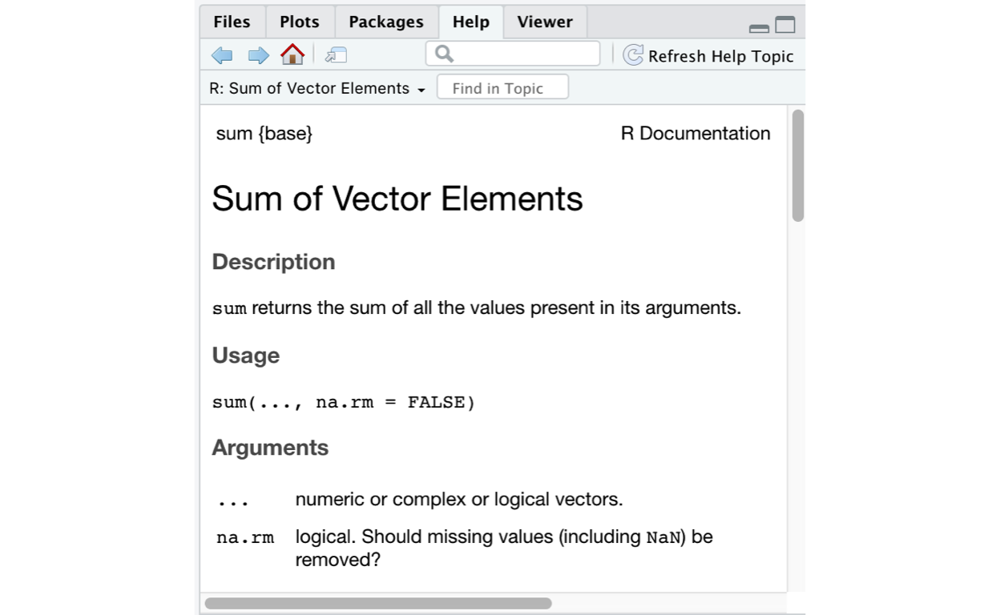

In this tutorial, we will go over the basics of programming with R and how we can use R to work with data.
R as a calculatorAt its most basic level, R can be used to perform calculations just like your regular handheld calculator. Any arithmetic/mathematical operation can be done in R.
2+2## [1] 45-1## [1] 44*4## [1] 1610/5## [1] 2R as a calculatorTry out using R as a calculator!
OPTIONAL - ADVANCED EXERCISE: Use R as a calculator and compute the number of minutes in a year.
# any arithmetic will do
5+3
8-1
7*2
24/3
# OPTIONAL ADVANCED ANSWER
365*60*24R SyntaxNow that we know a little bit about using R as a calculator, let’s get into basic R syntax.
R works by creating objects - pieces of data stored in the environment. We can create an object x that contains a single piece of data - the number 5.
x <- 5When we type the object, x, and run it, R will print out the contents.
x## [1] 5x is an example of a vector, an object containing values of a single type. Here, the type is numeric, because 5 is a number. Furthermore, x contains only one value. However, we can use the c() command to create a vector containing multiple values. All we have to do is use c() and separate the values with a comma. Here’s an example:
vector_1 <- c(1,2,3,4,5)
vector_1## [1] 1 2 3 4 5Again, when we type the object name, R will print its contents.
We can perform arithmetic operations on this vector, as well.
vector_1 + 1## [1] 2 3 4 5 6Because R is vectorized, this operation was performed on each element of vector_1. That means that we add 1 to the first value in vector_1, 1, and then do so for the second value, 2, and so on.
Note that vector_1 has not actually changed, because we didn’t assign vector_1 + 1 to an R object.
vector_1## [1] 1 2 3 4 5BUT, when we assign this to an object, vector_2, this is stored in our R workspace.
vector_2 <- vector_1 + 1Whenever you want to see the contents of an object in R, simply run the name of the object as a line of code.
vector_2## [1] 2 3 4 5 6Create a vector, called vector_3, which contains the numbers 1 through 10 (Hint, the : operator can be used to create a sequence of integers).
vector_3 <- c(1,2,3,4,5,6,7,8,9,10)
vector_3
# OR an easier solution
vector_3_easy <- 1:10
vector_3_easyFunctions are incredibly useful tools in R. A function (also sometimes referred to as a command) is an object that performs an operation in R. That may sound vague, but that’s because there are so many functions that do so many things!
One of the most simple functions is print(). print() simply prints out the contents of an object to the console. Printing is ubiquitous in programming.
x<-1
print(x)## [1] 1print() is often unnecessary, because running the name of an object will print its contents.
x## [1] 1There are many, many other R functions. Let’s demonstrate the use of them.
Let’s take a particularly common function: sum(). sum() is used to add up all the values in a numeric vector. For example, let’s go back to the first vector we created, vector_1.
vector_1## [1] 1 2 3 4 5# Add up all the elements in vector_1
sum(vector_1)## [1] 15There are so many functions built into R, and demonstrating all of them is beyond the scope of a single tutorial. It is also possible to create custom functions yourself (though this is also beyond the scope of this tutorial). But now, we should go through some brief terminology re: functions.
A function argument is the input you give to a function. For example, the function sqrt() (which computes the square root of a number), requires a single argument, x, which is the value to compute the square root of. This is an example of a required argument.
Functions also have optional arguments, which have default values. In other words, these arguments have particular values unless the user (i.e., you) tells . For example, sum() has the optional argument na.rm, which defines whether or not the function will remove NA values (R’s version of missing data). na.rm can take on the values TRUE or FALSE.
Below, we create a vector, y, which contains numeric data along with an NA value. When we run sum(), it will return an NA value, because by default, na.rm=FALSE, meaning that sum() does NOT remove missing data.
y <- c(1,2,3,4,5,NA)
sum(y)## [1] NAIf we specify that na.rm=TRUE, sum() will remove the NA value and we will add up all the elements in the vector.
sum(y,na.rm=TRUE)## [1] 15It’s very common to need some help when using a function. That is, you may need info about what the function does, what arguments it takes etc. To view the documentation for a function (the info page explaining how the function works), simply run a line of code containing a ? followed by the function name (or run help(<function name>). RStudio will pull up the documentation in the bottom right panel.
?sum
help(sum)
abs() functionIn the exercise box below, there is a vector, vec_x, pre-loaded. Examine the data, and then use the abs() function on vec_x. Then, see if you can figure out what abs() does, using the ? operator (you may need to pull up RStudio for this).
vec_xabs(vec_x)
# abs() takes the absolute value of each element in a vectorThere are many functions in R, both those built-in to R and those that come with packages we load. We will use more functions throughout this tutorial (and other tutorials). Do not hesitate to ask for help with a function if needed!
Now, we will use the principles we’ve discussed so far to learn about dataframes, a common way of storing data in R.
The most common data stucture in R is the dataframe. A dataframe is a tabular data structure containing rows and columns. Each column typically has a name. Here is one example, an object that we will call survey_data.
First, we will read in the data.1
survey_data <- read_csv("survey_data.csv")survey_dataThis dataframe consists of three columns, age, pol_party (political party), and voted_2020 (whether or not the survey respondent voted in the 2020 election).2
This dataframe is tidy, because each row represents a single observation (in our case, a single respondent in our survey).
R indexWe can index, or select, a column in the dataframe using the $ symbol.
survey_data$age## [1] 47 38 31 53 74 33 62 75 47 36 56 70 46 57 33 67 20 73 69 75 57 44 50 21 56
## [26] 68 55 58 72 39 20 21 71 75 72 51 32 32 19 32 28 49 52 29 67 31 61 60 51 57
## [51] 58 73 46 19 64 66 72 69 40 32 36 42 45 37 46 21 73 64 23 29 32 28 62 68 48
## [76] 32 26 70 73 50 33 32 20 62 30 40 22 19 23 50 30 42 41 66 26 46 31 34 41 56dplyr select() functionIf we use the dplyr package (part of the tidyverse, a series of influential software packages with a common underlying philosophy), we can use the select() function to select a single column (or multiple columns).
library(dplyr)
select(survey_data, age)select(survey_data, age, pol_party)The pol_party and voted_2020 columns are different from the age column, because these are made up of character data - essentially, they can contain letters. Character data is great because not everything can be measured numerically, and alphabetical labels are often necessary. However, remember that you cannot perform numeric operations with this data. Attempting to do so will cause R to throw an error.
survey_data$pol_party * 2## Error in survey_data$pol_party * 2: non-numeric argument to binary operatorVery often we need to add columns to our existing dataframe. We can do so fairly easily in R.
R versionWe can also use $ to create new columns in a dataframe. For example, say we wanted to convert our respondents’ ages to months (by multiplying by 12). We can easily do so below.
survey_data$age_months <- survey_data$age * 12
survey_datadplyr mutate() versionWe can also use mutate() a function from dplyr, to create a new column (just make sure to save the results to your R object). Note that we don’t need to use $ here, because we reference survey_data as the first function argument, mutate() knows to look in the survey_data dataframe for our age column.
survey_data <- mutate(survey_data, age_months=age*12)
survey_dataTry creating a new column in survey_data, which contains the values in age minus 1. Call it age_minus_1. See if you can do so using base R and mutate().
survey_data# base R solution
survey_data$age_minus_1 <- survey_date$age - 1
# dplyr solution
survey_data <- mutate(survey_data, age_minus_1=age-1)
# new version of our object
survey_dataYou’ve now learned a bit about the basics of R programming. You will continue to build these skills in future tutorials, where you learn about using R to do basic statistical analysis.